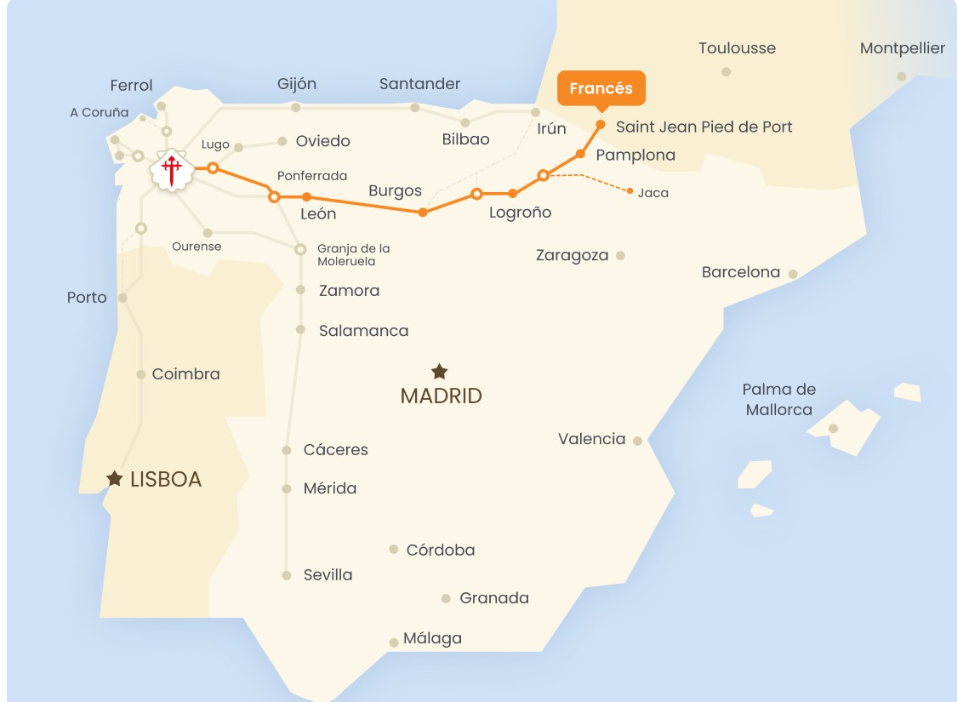

Camino Francés (Camino de santiago)
Son aproximadamente 780 km, pasando por comunidades como Navarra, La Rioja, Castilla y León y Galicia. A lo largo del camino se recorren paisajes muy variados: montañas, viñedos, mesetas infinitas y bosques verdes gallegos.

El Caminito del Rey (Málaga, Andalucía)
Tiene unos 7,7 km de recorrido total (incluyendo accesos), con tramos de pasarelas de madera que cuelgan a más de 100 metros de altura sobre el río Guadalhorce. Antiguamente fue construido para dar acceso a los trabajadores de unas centrales hidroeléctricas, y tras su restauración en 2015 se ha convertido en una de las rutas más impresionantes y seguras de España.

Ruta de los Lagos de Covadonga (Asturias)
Tiene unos 6 a 7 km de recorrido, dependiendo del sendero elegido, que conecta los lagos glaciares Enol y Ercina, rodeados de montañas, praderas verdes y cabañas de pastores. El camino atraviesa suaves ascensos y miradores naturales desde los que se contemplan vistas espectaculares del Parque Nacional de los Picos de Europa.